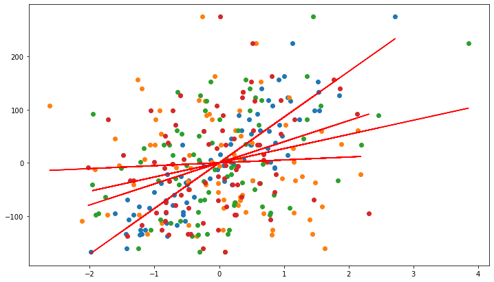
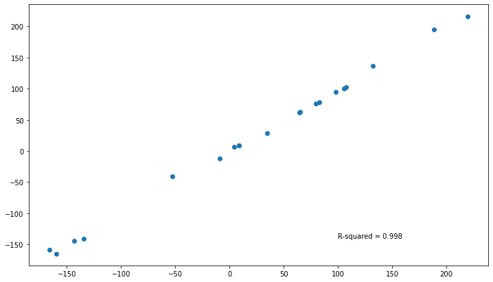

Exploring the different linear regressions which use the hime.LinearRegression class as the BaseEstimator¶
[1]:
import os
import numpy as np
import pandas as pd
import seaborn as sns
import matplotlib.pyplot as plt
from sklearn.datasets import make_regression
from sklearn.metrics import r2_score
import session_info
[2]:
current_wd = os.getcwd()
os.chdir(current_wd.split("/notebook")[0])
from hime.linear_model import LinearRegression, LassoRegression, RidgeRegression
os.chdir(current_wd)
[3]:
session_info.show(write_req_file=False)
[3]:
Click to view session information
----- hime 0.0.1 matplotlib 3.3.4 numpy 1.19.2 pandas 1.2.3 seaborn 0.11.1 session_info 1.0.0 sklearn 0.24.1 -----
Click to view modules imported as dependencies
PIL 8.1.2 appnope 0.1.2 backcall 0.2.0 casadi 3.5.5 cffi 1.14.5 colorama 0.3.9 cycler 0.10.0 cython_runtime NA dateutil 2.8.1 decorator 4.4.2 ipykernel 5.3.4 ipython_genutils 0.2.0 ipywidgets 7.6.3 jedi 0.17.2 joblib 0.17.0 kiwisolver 1.3.1 mpl_toolkits NA parso 0.7.0 pexpect 4.8.0 pickleshare 0.7.5 pkg_resources NA prompt_toolkit 3.0.8 psutil 5.8.0 ptyprocess 0.7.0 pyexpat NA pygments 2.8.1 pyparsing 2.4.7 pytz 2021.1 repoze NA scipy 1.5.3 simplejson 3.17.5 six 1.15.0 statsmodels 0.12.2 storemagic NA swig_runtime_data4 NA tornado 6.1 traitlets 5.0.5 wcwidth 0.2.5 zc NA zmq 20.0.0
----- IPython 7.21.0 jupyter_client 6.1.7 jupyter_core 4.7.1 jupyterlab 2.2.6 notebook 6.2.0 ----- Python 3.9.2 (default, Mar 3 2021, 11:58:52) [Clang 10.0.0 ] macOS-10.16-x86_64-i386-64bit ----- Session information updated at 2021-10-21 15:03
Make X and y data¶
[4]:
amount_of_features = 4
X, y, coef = make_regression(n_samples=100,
n_features=amount_of_features,
n_informative=amount_of_features,
noise=5,
coef=True,
random_state=42)
[5]:
coef
[5]:
array([86.47223763, 5.63754967, 27.34070719, 41.48195023])
Fit the model¶
[6]:
df = (pd.DataFrame(X, columns=[f"feat_{x}" for x in range(0, X.shape[1])])
.merge(pd.DataFrame(y, columns=["target"]),
left_index=True,
right_index=True))
[7]:
df.head()
[7]:
| feat_0 | feat_1 | feat_2 | feat_3 | target | |
|---|---|---|---|---|---|
| 0 | 0.852433 | -0.661786 | 0.186454 | -2.025143 | -8.751790 |
| 1 | -0.493001 | -0.208122 | -0.622700 | 0.280992 | -40.948309 |
| 2 | -1.142970 | 0.058209 | 0.153725 | -0.883857 | -126.192510 |
| 3 | 0.375698 | -1.150994 | 0.110923 | -0.544383 | 7.050788 |
| 4 | -1.196207 | -1.106335 | -0.185659 | -0.479174 | -134.050438 |
[8]:
df_train = df.sample(frac=0.8, random_state=69420)
df_test = df.drop(df_train.index)
[9]:
df_train.shape, df_test.shape
[9]:
((80, 5), (20, 5))
Fit the romeo LinearRegression¶
[10]:
reg = LinearRegression(fit_intercept=True,
normalize=True).fit(X=df_train.filter(regex="feat"),
y=df_train["target"],
verbose=False)
[11]:
reg.summary_
[11]:
| coef | std_err | t | P>|t| | [0.025 | 0.975] | |
|---|---|---|---|---|---|---|
| intercept | -0.171726 | 0.651993 | -0.263386 | 7.929751e-01 | -1.470563 | 1.127110 |
| feat_0 | 87.155885 | 0.701928 | 124.166366 | 1.410762e-88 | 85.757572 | 88.554198 |
| feat_1 | 5.751563 | 0.655423 | 8.775339 | 3.983391e-13 | 4.445893 | 7.057234 |
| feat_2 | 26.934038 | 0.660686 | 40.766763 | 6.241126e-53 | 25.617884 | 28.250193 |
| feat_3 | 40.459461 | 0.767188 | 52.737353 | 4.910777e-61 | 38.931144 | 41.987777 |
Fit the romeo LassoRegression¶
[12]:
reg = LassoRegression(fit_intercept=True,
normalize=True).fit(X=df_train.filter(regex="feat"),
y=df_train["target"],
verbose=False)
[13]:
reg.summary_
[13]:
| coef | std_err | t | P>|t| | [0.025 | 0.975] | |
|---|---|---|---|---|---|---|
| intercept | -0.165649 | 0.675911 | -0.245075 | 8.070673e-01 | -1.512133 | 1.180835 |
| feat_0 | 87.147864 | 0.727678 | 119.761519 | 2.089901e-87 | 85.698254 | 88.597474 |
| feat_1 | 5.743241 | 0.679468 | 8.452562 | 1.640541e-12 | 4.389673 | 7.096810 |
| feat_2 | 26.927887 | 0.684923 | 39.315186 | 8.396310e-52 | 25.563450 | 28.292325 |
| feat_3 | 40.449371 | 0.795332 | 50.858473 | 6.934968e-60 | 38.864989 | 42.033754 |
[14]:
reg.fit_evaluation_.round(3)
[14]:
| r_squared | r_squared_adj | f_statistic | f_statistic_pvalue | log_likelihood | AIC | BIC | |
|---|---|---|---|---|---|---|---|
| model_evaluation | 0.997 | 0.997 | 5759.773 | 0.0 | -247.64 | 503.28 | 512.808 |
Fit the romeo RidgeRegression¶
[15]:
reg = RidgeRegression(fit_intercept=True,
normalize=True).fit(X=df_train.filter(regex="feat"),
y=df_train["target"],
verbose=False)
[16]:
reg.summary_
[16]:
| coef | std_err | t | P>|t| | [0.025 | 0.975] | |
|---|---|---|---|---|---|---|
| intercept | -0.186703 | 0.599692 | -0.311331 | 7.564130e-01 | -1.381351 | 1.007946 |
| feat_0 | 85.903044 | 0.645622 | 133.054681 | 8.082439e-91 | 84.616899 | 87.189189 |
| feat_1 | 5.438884 | 0.602848 | 9.021987 | 1.352162e-13 | 4.237950 | 6.639819 |
| feat_2 | 26.708260 | 0.607688 | 43.950589 | 2.773902e-55 | 25.497683 | 27.918837 |
| feat_3 | 39.636512 | 0.705647 | 56.170465 | 4.864308e-63 | 38.230791 | 41.042233 |
[17]:
reg.fit_evaluation_.round(3)
[17]:
| r_squared | r_squared_adj | f_statistic | f_statistic_pvalue | log_likelihood | AIC | BIC | |
|---|---|---|---|---|---|---|---|
| model_evaluation | 0.997 | 0.996 | 5408.375 | 0.0 | -250.155 | 508.311 | 517.839 |
[18]:
intercept = reg.intercept_
coefs = reg.coef_
Plot the original data and the lines of best fit for each of the predictors on the target¶
[19]:
_ = plt.figure(figsize=(12, 7))
_ = plt.plot(df_train.filter(regex="feat"),
df_train["target"],
'o',
label='original data')
_ = plt.plot(df_train.filter(regex="feat"),
intercept + coefs*df_train.filter(regex="feat"),
'r',
label='fitted line')
# _ = plt.legend()

With the fitted model attempt to predict the test data¶
[20]:
y_pred = reg.predict(df_test.filter(regex="feat"))
y_pred.head(2)
[20]:
| y_pred | |
|---|---|
| 9 | 28.745442 |
| 23 | 216.434209 |
[21]:
y_test = df_test[["target"]]
y_test.head(2)
[21]:
| target | |
|---|---|
| 9 | 34.902372 |
| 23 | 219.457181 |
Calculate the r2 between the predicted vs the real scores¶
[22]:
r_sq = r2_score(y_test["target"],
y_pred)
r_sq
[22]:
0.997902689598276
Plot the predicted vs the real values¶
[23]:
_ = plt.figure(figsize=(12, 7))
_ = plt.plot(y_test["target"],
y_pred,
'o',
# label='original data'
)
_ = plt.annotate(text = f"R-squared = {round(r_sq, 3)}",
xy=(100, -140),)
